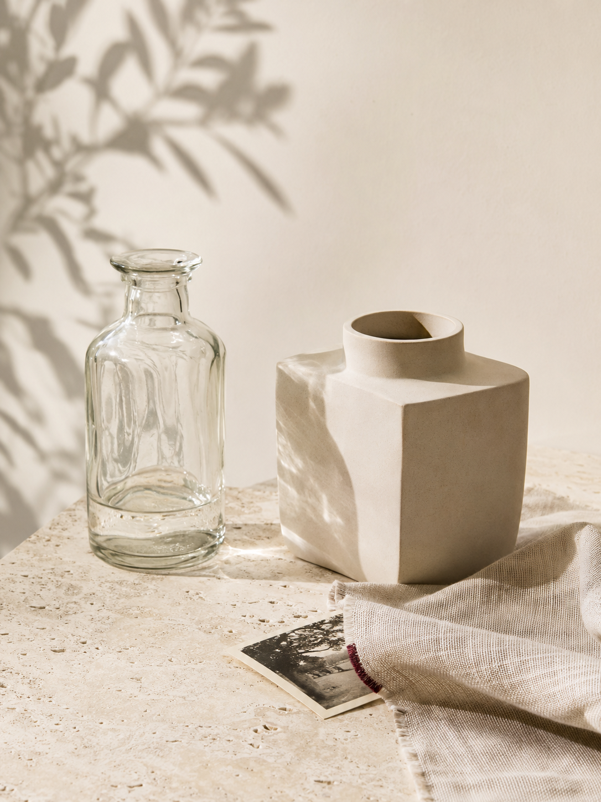
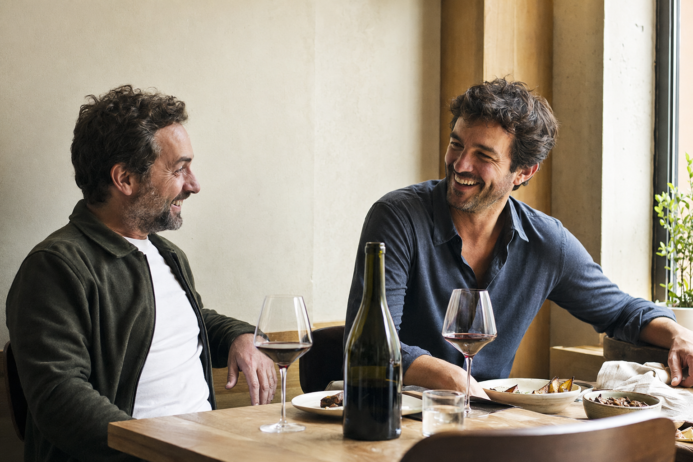
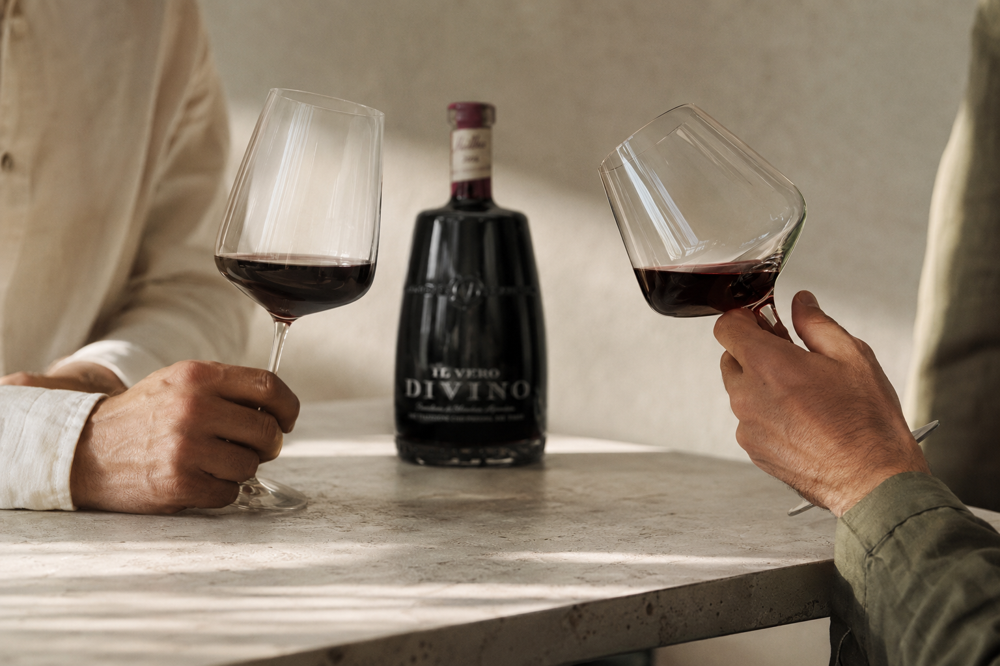
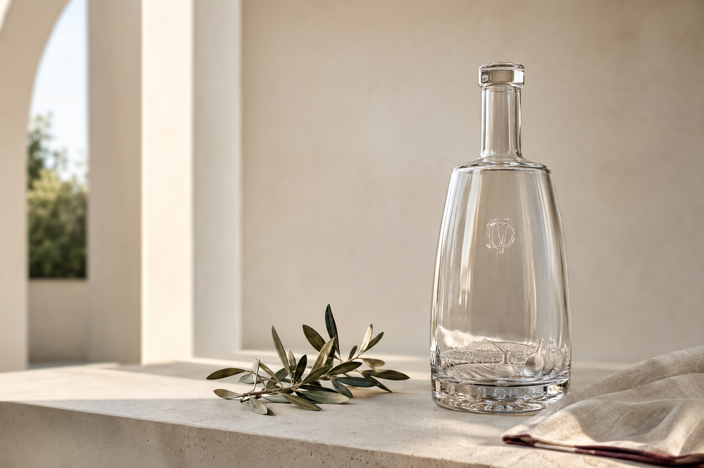

Una historia italiana. Dos amigos. Un nuevo comienzo.
01 · El origen
La historia comienza en la Toscana
El origen de IL VERO DIVINO se remonta a la Toscana, Italia, donde nuestros antepasados elaboraban vino en ánforas de cerámica.
Durante la Segunda Guerra Mundial, ante la escasez de botellas, la familia comenzó a recuperar y reutilizar envases de vidrio de bebidas blancas para conservar el vino y compartirlo con sus allegados.

Toscana · Italia
02 · Il Divino
En tiempos difíciles, cada cosecha era una bendición: el vino traía alegría y convertía la mesa familiar en un refugio, en ese momento especial al que llamaban Il Divino.
Italia → San Rafael

Creado entre amigos
03 · El reencuentro con el legado
Dos amigos. Un nuevo comienzo.
Tres generaciones después, Mariano Buenaventura y Diego Mosquera retoman aquella historia.
Amigos desde hace años y unidos por la pasión por viajar, descubrir vinos y compartir largas conversaciones alrededor de una mesa, deciden dar vida a un proyecto que refleja su propia manera de vivir y disfrutar el vino.
Con el asesoramiento del enólogo Maxi Goulu y del sommelier Henry [Apellido], el proyecto toma forma en sus primeras etiquetas: Malbec, Malbec Reserva y Chardonnay.
04 · Para descubrir. Para seguir disfrutando.
Cada copa, cada encuentro… lo verdaderamente divino
Para quienes ya conocen el lenguaje del vino y de los encuentros, y para quienes recién comienzan a descubrirlo.
Siempre hay un nuevo sabor por conocer y una buena razón para brindar.


05 · Una historia que continúa en la botella
Diseñada para perdurar
Aquellas botellas reutilizadas en la Italia de los años cuarenta inspiran nuestro presente. El diseño de IL VERO DIVINO invita a conservar la botella, darle una nueva vida y convertirla en parte de nuevos recuerdos.
Como tributo a una dedicación que atraviesa generaciones, el fondo de cada botella revela una ilustración de la Toscana y de las ánforas donde comenzó todo.
El vino se comparte. La historia permanece.
Nuestros vinos
Tres vinos. Tres formas de vivirlos.
Para encontrarse. Para quedarse. Para dejarse llevar.
Hay momentos que no necesitan un plan. Un almuerzo al sol, una charla que se alarga o un brindis espontáneo. Este Chardonnay fue pensado para acompañar esos instantes en los que solo hace falta disfrutar y dejarse llevar.
Los mejores encuentros no necesitan una excusa. Solo una buena mesa, una copa de vino y ganas de compartir. Este Malbec fue pensado para acompañar esos momentos que empiezan con un brindis y terminan convirtiéndose en un gran recuerdo.
Las mejores mesas son aquellas de las que nadie tiene ganas de levantarse. Este Malbec Reserva fue pensado para acompañar esas comidas que se disfrutan sin apuro, donde el vino, la conversación y la buena compañía encuentran su mejor lugar.